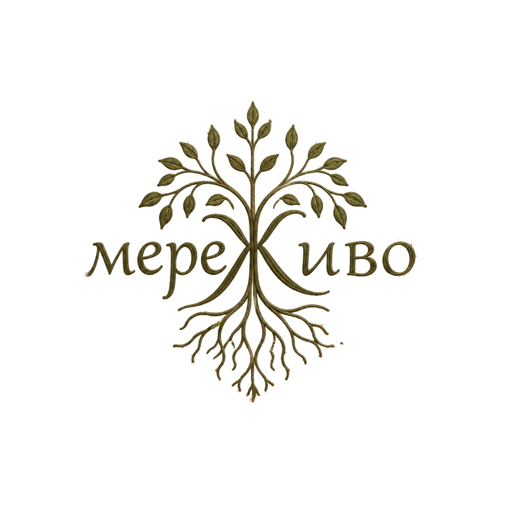

Для тих, хто поруч з іншими
Турбота
теж потребує
турботи.
Мереживо об'єднує жінок, які підтримують інших під час війни в Україні.

 OUR TOOLS
OUR TOOLS
Мереживо унікальне завдяки тим, хто в ньому зібрався. У нашій спільноті багато фахівчинь, і кожна має свою сильну практику: тілесна терапія, психологія, робота з нервовою системою, малюнок, голос, музика.
Тому кожна зустріч і кожен ретрит складаються в особливий набір інструментів, який більше ніде не повториться.
І в цьому наша особливість: жінка тут не лише віддає, а й отримує турботу. Ті, хто звик підтримувати інших, відновлюються тими самими практиками, якими діляться самі.

Наші практики
- Тай-чі, йога, цигун
- Танець і контактна імпровізація
- Арт-терапія
- Мануальна й краніосакральна терапія, масаж, остеопатія
- Психотерапія
- Голос і спів
- Саунд-хілінг
- Ароматерапія й акупунктура
- Природа та відновлення
- Лекції

WHY IS THIS IMPORTANT

Українські психологині та терапевтки різних напрямів працюють там, де йдуть обстріли. Вони підтримують мешканців міст під ударами, ветеранів, родини, які втратили близьких на війні.
Це непроста робота, і її дуже багато: часто без вихідних, нерідко на волонтерських засадах, при організаціях. Багато хто не може вирватися навіть на кілька днів.
Така професія зараз потребує величезних ресурсів і підтримки. Проте вона лишається в тіні, бо поруч завжди є наче важливіші проблеми. А насправді на плечах цих фахівчинь тримається дуже багато.
Тому їм самим потрібен простір, де можна відновитися: поговорити з тими, хто розуміє, поділитися болем, просто помовчати. Відчути опору і знати, що ти потрібна й важлива, навіть коли нічого не робиш.

Кожен ретрит потроху повертає чутливість і сили. Він дає змогу прожити важкий період у підтримувальному оточенні й не залишатися з цим наодинці. Навіть коротка поїздка допомагає берегти фізичне та психічне здоров'я.
Для тих, хто залишився в країні й проживає війну зсередини, такі простори особливо важливі.
Safe Home Residency
Ukraine 🇺🇦
Welcome Home, Friends! ❤️
Where kindness and care are not just words, but a lived reality that we choose and co-create together.
We are renting a big, wonderful house in the Carpathian Mountains. A place close enough to reach, and far enough away to feel safe.
What makes this project special is that we are a living network of people – friends, therapists, volunteers, activists, and those who choose to be part of the change in our society, in the midst of one of our darkest times: a full-scale war that has been taking place in our home for almost five years now.
We can only survive and grow by staying together. By not hardening our hearts to the suffering of others, but standing strong together and offering real help to those who need it now.
What do we offer?
Safe Home is open to our growing networks of women therapists and volunteers who are in deep need of rest, recovery, and a moment of peace.
- Accommodation and food
- Practical and psychological support
- Trauma-informed tools
- Therapy sessions when needed
All free of charge!
We need each other.
To continue this deeply meaningful initiative, we need support. We need funds, visibility, and kind human hearts showing their solidarity and care.
We are opening an official fundraiser to support Safe Home!
Nadiya ry
For more information
Please contact us personally or email us at:
nadiya.creatinghope@gmail.comDeepest gratitude for your support!
Everything matters!
Every drop of care and goodness is real gold in today's world.
Let's stay together. We need each other! ❤️